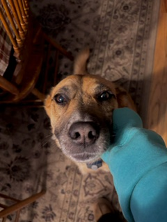
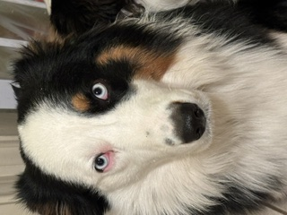
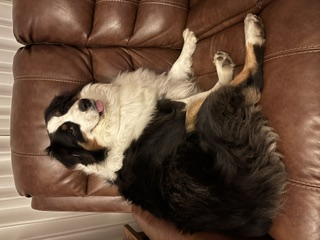
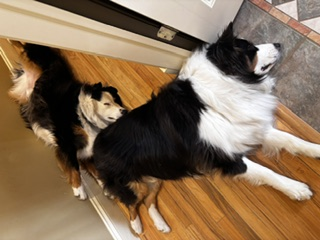
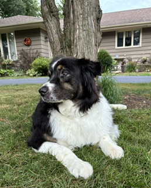

This is my soul dog, Bleu. His nickname is Peanut. I raised him nearly myself, if a dog could be a baby; he is my baby.

This is Mickey, we also call him Michael when he is in trouble. Also Mickey Mouse when he's not in trouble.

This is Angus, he was named after the singer of ACDC. NOT angus beef. We also call him Mingus, a combination of Mickey and Angus.

Mickey and Angus are closer in age (2 and 3) they are as thick as thieves.

This is our angel pup Maxx, he passed 2 years ago. He was an actual angel alive too, by the way.